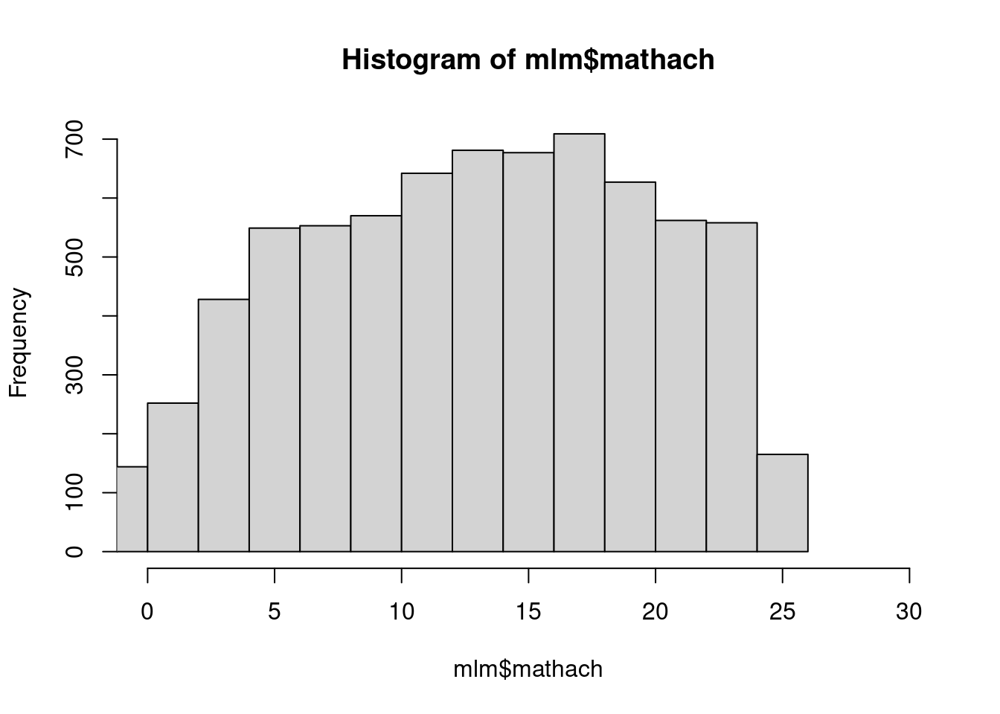
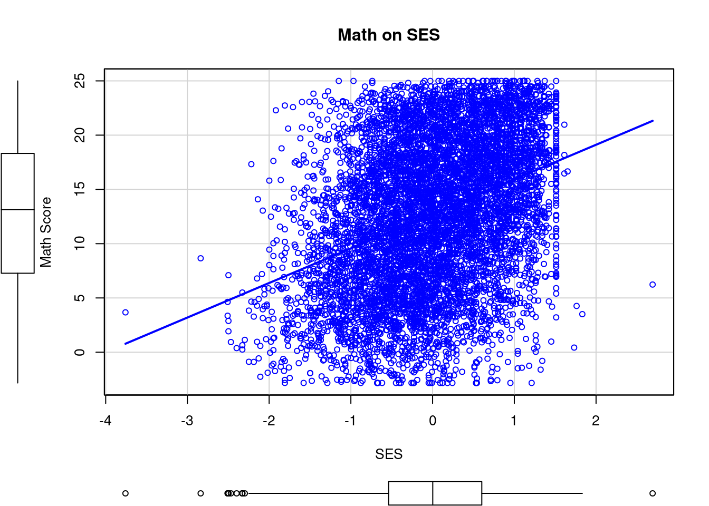
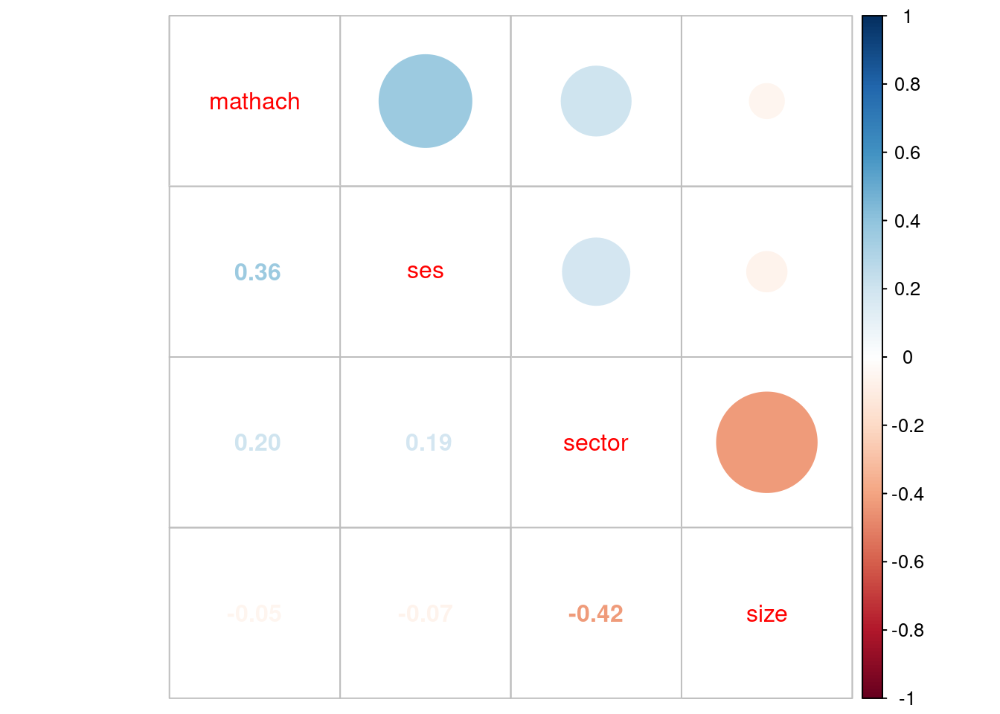
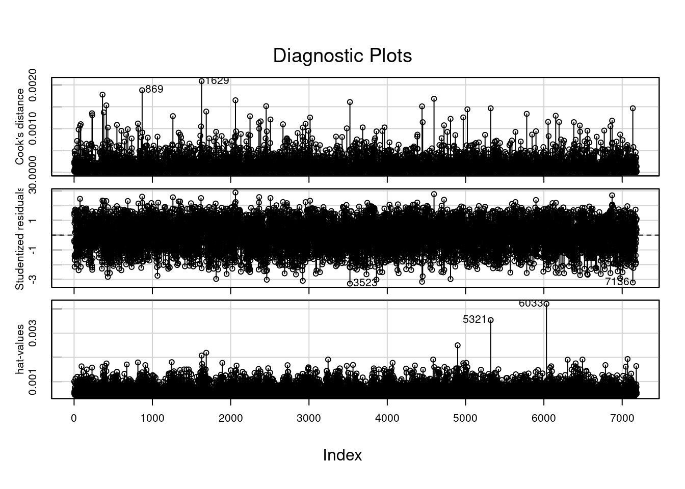
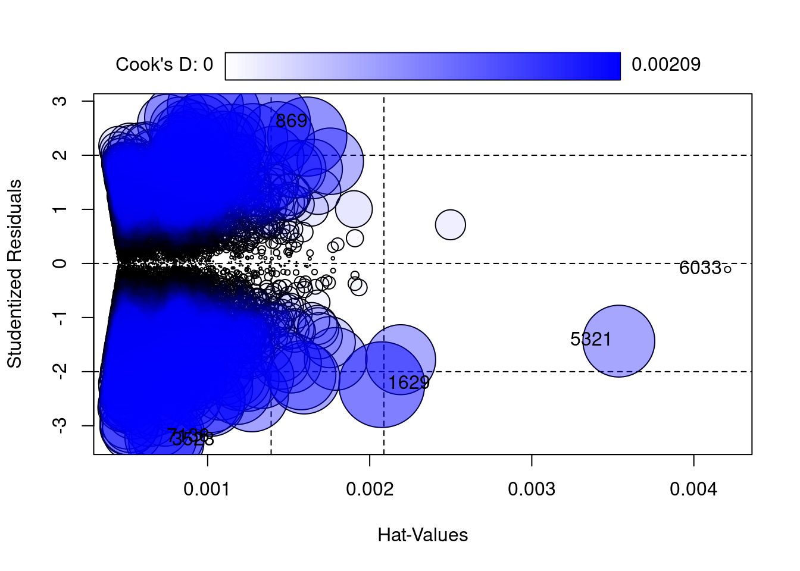

pacman::p_load(
haven, # lectura de datos formato externo
car, # función scatterplot y otras de manejo de datos
corrplot, # correlaciones
dplyr, # varios gestión de datos
stargazer, # tablas
lme4) # multilevelPráctica 2. Datos y estimaciones en dos niveles
Correspondiente a la sesión del viernes, 25 de agosto de 2023
Presentación
Objetivo de la práctica
Preparar y manipular datos a distintos niveles y comprender la diferencia de estimaciones a distintos niveles.
Instalación de librerías
Lectura de datos High School & Beyond (HSB
High School & Beyond (HSB) es una muestra representativa nacional de educación secundaria publica y católica de USA implementada por el National Center for Education Statistics (NCES). Esta base de datos se utiliza en varios textos dedicados a multinivel.
Más información en https://nces.ed.gov/surveys/hsb/
En formato stata desde sitio web
mlm = read_dta("http://www.stata-press.com/data/mlmus3/hsb.dta")mlm es el nombre que le daremos al objeto base de datos “High School and Beyond” en nuestra práctica.
Variables relevantes para ejercicios:
- Nivel 1:
- minority, an indicator for student ethnicity (1 = minority, 0 = other)
- female, an indicator for student gender (1 = female, 0 = male)
- ses, a standardized scale constructed from variables measuring parental education, occupation, and income
- mathach, a measure of mathematics achievement
- Nivel 2
- size (school enrollment)
- sector (1 = Catholic, 0 = public)
- pracad (proportion of students in the academic track)
- disclim (a scale measuring disciplinary climate)
- himnty (1 = more than 40% minority enrollment, 0 = less than 40%)
- mnses (mean of the SES values for the students in this school who are included in the level-1 file)
- Cluster variable: schoolid
Exploración y descripción
dim(mlm) # dimensiones de base de datos[1] 7185 26names(mlm) # Muestra los nombres de las variables en la base [1] "minority" "female" "ses" "mathach" "size" "sector"
[7] "pracad" "disclim" "himinty" "schoolid" "mean" "sd"
[13] "sdalt" "junk" "sdalt2" "num" "se" "sealt"
[19] "sealt2" "t2" "t2alt" "pickone" "mmses" "mnses"
[25] "xb" "resid" Seleccionar variables de interes
mlm=mlm %>% select(minority,female,ses,mathach,size,sector,pracad,disclim,himinty,mnses,schoolid) %>% as.data.frame()
dim(mlm)[1] 7185 11head(mlm) # Muestra los primeros 10 casos para cada variable minority female ses mathach size sector pracad disclim himinty mnses
1 0 1 -1.528 5.876 842 0 0.35 1.597 0 -0.434383
2 0 1 -0.588 19.708 842 0 0.35 1.597 0 -0.434383
3 0 0 -0.528 20.349 842 0 0.35 1.597 0 -0.434383
4 0 0 -0.668 8.781 842 0 0.35 1.597 0 -0.434383
5 0 0 -0.158 17.898 842 0 0.35 1.597 0 -0.434383
6 0 0 0.022 4.583 842 0 0.35 1.597 0 -0.434383
schoolid
1 1224
2 1224
3 1224
4 1224
5 1224
6 1224summary(mlm) # Descriptivos generales (evaluación de datos perdidos) minority female ses mathach
Min. :0.0000 Min. :0.0000 Min. :-3.758000 Min. :-2.832
1st Qu.:0.0000 1st Qu.:0.0000 1st Qu.:-0.538000 1st Qu.: 7.275
Median :0.0000 Median :1.0000 Median : 0.002000 Median :13.131
Mean :0.2747 Mean :0.5282 Mean : 0.000143 Mean :12.748
3rd Qu.:1.0000 3rd Qu.:1.0000 3rd Qu.: 0.602000 3rd Qu.:18.317
Max. :1.0000 Max. :1.0000 Max. : 2.692000 Max. :24.993
size sector pracad disclim
Min. : 100 Min. :0.0000 Min. :0.0000 Min. :-2.4160
1st Qu.: 565 1st Qu.:0.0000 1st Qu.:0.3200 1st Qu.:-0.8170
Median :1016 Median :0.0000 Median :0.5300 Median :-0.2310
Mean :1057 Mean :0.4931 Mean :0.5345 Mean :-0.1319
3rd Qu.:1436 3rd Qu.:1.0000 3rd Qu.:0.7000 3rd Qu.: 0.4600
Max. :2713 Max. :1.0000 Max. :1.0000 Max. : 2.7560
himinty mnses schoolid
Min. :0.00 Min. :-1.1939460 Min. :1224
1st Qu.:0.00 1st Qu.:-0.3230000 1st Qu.:3020
Median :0.00 Median : 0.0320000 Median :5192
Mean :0.28 Mean : 0.0001434 Mean :5278
3rd Qu.:1.00 3rd Qu.: 0.3269123 3rd Qu.:7342
Max. :1.00 Max. : 0.8249825 Max. :9586 Tabla descriptiva con stargazer:
stargazer posee tres opciones básicas de output: text, html o latex (defecto). Si se quiere ver el contenido directamente en formato txt en la consola de R con fines exploratorios, usar text. Si se quiere reportar luego via knitr a html cambiar a html, y si se quiere exportar a pdf cambiar a Latex. Recomendación general: dejar inicialmente como text hasta el reporte final de resultados, facilita la visualización en la consola y no requiere tener que compilar para ver el resultado (en el caso de trabajar con Rmarkdown)
stargazer(mlm, title = "Descriptivos generales", type='text')
Descriptivos generales
=================================================
Statistic N Mean St. Dev. Min Max
-------------------------------------------------
minority 7,185 0.275 0.446 0 1
female 7,185 0.528 0.499 0 1
ses 7,185 0.0001 0.779 -3.758 2.692
mathach 7,185 12.748 6.878 -2.832 24.993
size 7,185 1,056.862 604.172 100 2,713
sector 7,185 0.493 0.500 0 1
pracad 7,185 0.534 0.251 0.000 1.000
disclim 7,185 -0.132 0.944 -2.416 2.756
himinty 7,185 0.280 0.449 0 1
mnses 7,185 0.0001 0.414 -1.194 0.825
schoolid 7,185 5,277.898 2,499.578 1,224 9,586
-------------------------------------------------- y con html…
stargazer(mlm, title = "Descriptivos generales", type='html')| Statistic | N | Mean | St. Dev. | Min | Max |
| minority | 7,185 | 0.275 | 0.446 | 0 | 1 |
| female | 7,185 | 0.528 | 0.499 | 0 | 1 |
| ses | 7,185 | 0.0001 | 0.779 | -3.758 | 2.692 |
| mathach | 7,185 | 12.748 | 6.878 | -2.832 | 24.993 |
| size | 7,185 | 1,056.862 | 604.172 | 100 | 2,713 |
| sector | 7,185 | 0.493 | 0.500 | 0 | 1 |
| pracad | 7,185 | 0.534 | 0.251 | 0.000 | 1.000 |
| disclim | 7,185 | -0.132 | 0.944 | -2.416 | 2.756 |
| himinty | 7,185 | 0.280 | 0.449 | 0 | 1 |
| mnses | 7,185 | 0.0001 | 0.414 | -1.194 | 0.825 |
| schoolid | 7,185 | 5,277.898 | 2,499.578 | 1,224 | 9,586 |
::: Para que se pueda obtener la tabla en html se debe agregar en las opciones del chunk en R results='asis' :::
Datos perdidos: crear una nueva base sin missing values (Listwise Deletion) (solo recomendado para objetos que contienen las variables a incluir en el modelo)
mlm2=na.omit(mlm) #Sacar missing data
names(mlm2)
summary(mlm2)Exploración visual de datos
hist(mlm$mathach, xlim = c(0,30))
summary(mlm$mathach) Min. 1st Qu. Median Mean 3rd Qu. Max.
-2.832 7.275 13.131 12.748 18.317 24.993 scatterplot(mlm$mathach ~ mlm$ses, data=mlm, xlab="SES", ylab="Math Score", main="Math on SES", smooth=FALSE)
Matriz de correlaciones de un subset de variables
cormat=mlm %>% select(mathach,ses,sector,size) %>% cor()
round(cormat, digits=2) mathach ses sector size
mathach 1.00 0.36 0.20 -0.05
ses 0.36 1.00 0.19 -0.07
sector 0.20 0.19 1.00 -0.42
size -0.05 -0.07 -0.42 1.00corrplot.mixed(cormat)
Estimación de regresiones
Nivel 1
reg1<- lm(mathach~1, data=mlm)
reg2<- lm(mathach~ses, data=mlm)
reg3<- lm(mathach~ses+female, data=mlm)
reg4<- lm(mathach~ses+female+sector, data=mlm)
reg5<- lm(mathach~ses+female+sector+minority, data=mlm)
summary(reg5)
Call:
lm(formula = mathach ~ ses + female + sector + minority, data = mlm)
Residuals:
Min 1Q Median 3Q Max
-20.2286 -4.5076 0.2104 4.7472 17.8078
Coefficients:
Estimate Std. Error t value Pr(>|t|)
(Intercept) 13.24158 0.13386 98.924 <2e-16 ***
ses 2.36392 0.09946 23.768 <2e-16 ***
female -1.42166 0.14608 -9.732 <2e-16 ***
sector 2.25492 0.14906 15.127 <2e-16 ***
minority -3.11239 0.17029 -18.277 <2e-16 ***
---
Signif. codes: 0 '***' 0.001 '**' 0.01 '*' 0.05 '.' 0.1 ' ' 1
Residual standard error: 6.166 on 7180 degrees of freedom
Multiple R-squared: 0.1969, Adjusted R-squared: 0.1965
F-statistic: 440.1 on 4 and 7180 DF, p-value: < 2.2e-16stargazer(reg5, title = "Regresión datos individuales", type='text')
Regresión datos individuales
===============================================
Dependent variable:
---------------------------
mathach
-----------------------------------------------
ses 2.364***
(0.099)
female -1.422***
(0.146)
sector 2.255***
(0.149)
minority -3.112***
(0.170)
Constant 13.242***
(0.134)
-----------------------------------------------
Observations 7,185
R2 0.197
Adjusted R2 0.196
Residual Std. Error 6.166 (df = 7180)
F Statistic 440.111*** (df = 4; 7180)
===============================================
Note: *p<0.1; **p<0.05; ***p<0.01Diagnóstico de residuos (con librería car)
influenceIndexPlot(reg5, vars=c("Cook", "Studentized", "hat"), id.n=5)
influencePlot(reg5, id.n=3) # el tama~no de los circulos se refiere a la D de Cook
StudRes Hat CookD
869 2.6047540 0.0013831364 0.0018779316
1629 -2.2407411 0.0020743123 0.0020861529
3523 -3.2842968 0.0007451964 0.0016066368
5321 -1.4359364 0.0035373357 0.0014636979
6033 -0.1116449 0.0042083659 0.0000105369
7136 -3.2099858 0.0007110209 0.0014644182Preparando datos agregados
En esta sección vamos a generar una base de datos agregada o colapsada, es decir, una base de datos donde los casos serán escuelas (no individuos). El objetivo de generar esta base es para poder realizar comparaciones con las estimaciones realizadas con la base de datos individuales. Estas estimaciones que realizaremos por separados serán luego integradas en una sola estimación mediante métodos multinivel.
Generación de base agregada
- Usando la funcion
group_by(agrupar por) de la libreríadplyr - Se agrupa por la variable cluster, que identifica a las unidades de nivel 2 (en este caso,
schoolid) - Por defecto se hace con el promedio, pero se pueden hacer otras funciones como contar, porcentajes, mediana, etc.
Para ello:
generamos el objeto
agg_mlmdesde el objetomlmagrupando por la variable cluster
schoolidagregamos (colapsamos) todas
summarise_allpor el promediofuns(mean)
agg_mlm=mlm %>% group_by(schoolid) %>% summarise_all(funs(mean)) %>% as.data.frame()
stargazer(agg_mlm, type = "text")Comparando regresiones
reg5_agg<- lm(mathach~ses+female+sector+minority, data=agg_mlm)
stargazer(reg5,reg5_agg, title = "Comparación de modelos",column.labels=c("Individual","Agregado"), type ='text')
Comparación de modelos
=====================================================================
Dependent variable:
-------------------------------------------------
mathach
Individual Agregado
(1) (2)
---------------------------------------------------------------------
ses 2.364*** 4.204***
(0.099) (0.418)
female -1.422*** -1.997***
(0.146) (0.532)
sector 2.255*** 1.635***
(0.149) (0.302)
minority -3.112*** -2.343***
(0.170) (0.534)
Constant 13.242*** 13.613***
(0.134) (0.347)
---------------------------------------------------------------------
Observations 7,185 160
R2 0.197 0.711
Adjusted R2 0.196 0.703
Residual Std. Error 6.166 (df = 7180) 1.699 (df = 155)
F Statistic 440.111*** (df = 4; 7180) 95.124*** (df = 4; 155)
=====================================================================
Note: *p<0.1; **p<0.05; ***p<0.01¿Qué diferencias existen entre ambas estimaciones? ¿Qué problemas o sesgos podría ocasionar el realizar estimaciones paralelamente en dos niveles?